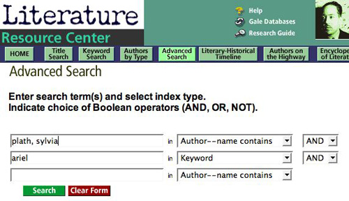
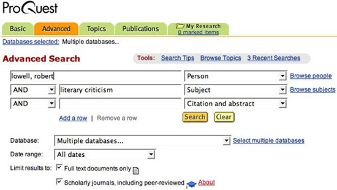

Find Reference Books
The following reference books, shelved in the Reference Room, provide information about the genre of poetry and critical analysis of specific literary texts. Some of the works cited below have similar titles for other literary genres, including drama, the novel, and short story.
Critical Survey of Poetry. 8 vols. Call No.: ref PR 502 .C85
Arranged alphabetically by poets' last name, this collection of essays places the poets' opus in a critical context and provides annotated bibliographies to direct readers to other sources about the poets and their works.
The Explicator. 58 vols. Call No.: ref PR 1.E9
Explicates English-language poems.
Masterplots II, Poetry Series. 9 vols. Call No.: ref PN 1110.6 .M37
Contains explanations and analyses of meaning, forms, and devices of commonly studied poems. Arrangement is alphabetical by title of text.
Poetry Criticism. 35 vols. Call No.: ref PN 1010 .P62
Provides excerpts of critical texts.
Poetry for Students. 11 vols. Call No.: ref PN 1010 .P64
Presents analysis, author biographies, context, and criticism of frequently anthologized poems.
Twentieth-Century Short Story Explication. New Series. 4 vols. Call No.: ref PN 3373 .W35
Contains bibliographies of interpretations of canonical short stories, arranged alphabetically by author's last name, then by title of text.
Other Useful Reference Books
Biography
- African American Writers. ref PS 153 .N5 A344
- Contemporary Authors. Bio Ref Z 1224 .C58
- Current Biography. Bio Ref CT 100 .C8
African American literary criticism
- African American Literary Criticism. ref PS 153 .N5 A33 1999
- Harlem Renaissance and Beyond. ref PS 153 .N5 R65 1990
- Masterpieces of African American Literature. ref PS 153 .N5 M264 1992
- Masterplots II, African American Series. ref PS 153 .N5 M2645 1994
- The Oxford Companion to African American Literature. ref PS 153 .N5 O96 1997
Feminist literary criticism
- American Women Writers. 5 vols. ref PS 147 .A4
- Cambridge Guide to Women's Writing in English. ref PR 111 .S24 1999
- Feminist Writers. ref PN 451 .F46 1996
- Masterplots II, Women's Literature Series. ref PN 471 .M37 1995
- Modern American Women Writers. ref PS 151 .M54 1990
- The Oxford Companion to Women's Writing in the United States. ref PS 147 .O94 1995
Specialized dictionaries and encyclopedias
- American Writers. 13 vols. ref PS 129 .A55
- The Concise Oxford Dictionary of Literary Terms. ref PN 41 .C67 1990
- A Dictionary of Literary Terms and Literary Theory. 4th ed. ref PN 41 .C83 1998
- Encyclopedia of Literature. ref PN 41 .M42 1995
- A Glossary of Literary Terms. 7th ed. ref PN 41 .A184 1999
- A Handbook of Literature. ref PN 41 .H6 1992
- A Multicultural Dictionary of Literary Terms. ref PN 41 .C28 1999
Print indexes
- Essay and General Literature Index. Index. ref AI 3 .E752
- Humanities Index. Index. ref AI 3 .H85
- MLA International Bibliography. (Note: An online version is available, but the Library does not subscribe to it at this time.) ref Z 7006 .M64. 1963-1991
Find Books & eBooks
The Library's online catalog, called Voyager, indexes books, eBooks, videos, and other material by subject, author, title, keyword, and call number. By searching Voyager, you may identify author biographies, critical texts, and literary texts.
To search Voyager by subject, enter your search term (if it's an author's name, remember to enter the last name first), then click on "subject search" in the pull-down menu on the right of the screen.
| Lowell, Robert | [Subject search] |
| Bishop, Elizabeth | [Subject search] |
| Hughes, Langston | [Subject search] |
| Women poets, American 20th century Biography | [Subject search] |
| Feminist literary criticism | [Subject search] |
To narrow your search to literary criticism or biographical information on a particular author, select the following sample subheadings:
| Plath, Sylvia Criticism and interpretation | [Subject search] |
| Sexton, Anne Biography | [Subject search] |
Keyword searching allows you to search by descriptive words.
| "confessional poets" | [Keyword search] |
| "Harlem Renaissance" +poetry | [Keyword search] |
Since LBCC Library has a partnership agreement with CSULB, you may check out books from the University Library. To identify books, search CSULB's online catalog, called Coast, which is accessible over the Web at http://coast.library.csulb.edu/.
Find Articles
The Library subscribes to a number of online databases, which are accessible over the World Wide Web, from remote computers or those located in the Library. These databases index and abstract articles, and in many cases, provide the full text, enabling you to print or email a copy.
Literature Resource Center
This database contains full-text biographical and critical information about authors, literary movements, themes, and genres. Once you have selected Literature Resource Center from the list of available databases, click on the button labeled "Authenticate." You will see a list of GaleNet databases. Once more, click on Literature Resource Center.
There are many ways to search this database. For the purpose of your assignment you may want to enter an advanced search in order to search for a particular author and text, as shown below:
On the results screen, you may then click on the tab labeled "Literary Criticism, Articles, & Work Overviews" to display full-text articles of critical sources.
ProQuest
ProQuest indexes literature published in newspapers, magazines, and scholarly journals.
SIRS Renaissance
SIRS Renaissance is a database providing current information on the arts and humanities. Full-text articles are selected from over 1,200 domestic and international publications.
Find Websites
Several useful websites, related to literature, are accessible from the Library's homepage at http://lib.lbcc.edu. Click on "Internet Resources," then click on "Literature. " You will see a list of relevant sites. Since the list contains hypertext links, simply click on the site you want to visit. (Note: Information on the Web is extremely dynamic, and some of the links may be "dead"—that is, they may no longer work.)
Use a subject directory, such as those listed below, to find annotated and reviewed listings of websites by subjectects.
| Access Librarians' Index to the Internet (LII) | [http://www.lii.org] |
| Access Infomine | [http://infomine.ucr.edu] |
Use a search engine to do a keyword search.
| Access Google | [http://www.google.com] |
| Access Google Scholar | [http://scholar.google.com] |
| Access Ask.com | [http://ask.com] |
When selecting additional websites for research, consult Five Criteria for Evaluating Web Pages to learn how to identify authoritative Web pages that are suitable for research purposes.
Cite Your Sources
Remember to list the sources used in your research in a bibliography or works-cited page following a documentation styles, such as MLA (Modern Language Association). The most up-to-date guides for citing Web pages and other electronic sources are on the Web, and they are accessible from the Library's homepage. Click on "Websites," then click on "Citation Guides."